| 乾天 | 坎水 | 艮山 | 震雷 | 巽风 | 离火 | 坤地 | 兑 泽 泽 |
|
|---|---|---|---|---|---|---|---|---|
| 乾 天 |
1 乾为天 过刚则悔 刚健如龙 |
5 水天需 待机而动 饮食宴乐 |
26 山天大畜 养精蓄锐 储存资源 |
34 雷天大壮 扣索缰绳 野马奔腾 |
9 风天小蓄 雨过天晴 密云不雨 |
14 火天大有 万事如意 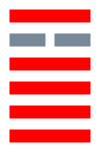阳光普照 |
11 地天泰 万事亨通 三阳开泰 |
43 泽天夬 果敢勇决 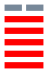老虎啸月 |
| 坎 水 |
6 天水讼 难达目的 争讼无益 |
29 坎为水 烦恼不安 陷入漩涡 |
4 山水蒙 寻物甚难 求知极佳 |
40 雷水解 宽大为怀 迎刃而解 |
59 风水涣 一帆风顺 离人起航 |
64 火水未济 有待来兹 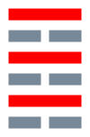时运不济 |
7 地水师 需要支持 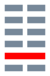容民畜众 |
47 泽水困 志不得伸 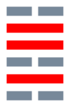困苦贫乏 |
| 艮 山 |
33 天山遁 没落衰退 逃避现实 |
39 水山蹇 不宜妄动 危险难行 |
52 艮为山 停止不前 屹立不移 |
62 雷山小过 竞见相背 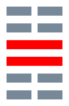行为过度 |
53 风山渐 有女于归 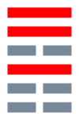鸿鸟起飞 |
56 火山旅 小亨贞吉 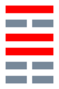艰苦旅程 |
15 地山谦 集多益寡 谦和诚实 |
31 泽山咸 得心应手 二气感应 |
| 震 雷 |
25 天雷无妄 顺天从命 听其自然 |
3 水雷屯 等待新机 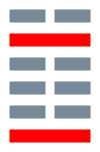暂时郁结 |
27 山雷颐 当心病祸 颐养合作 |
51 震为雷 震惊百里 雷声隆隆 |
42 风雷益 利人利己 损上益下 |
21 火雷噬嗑 克服困难 积极行动 |
24 地雷复 重新开始 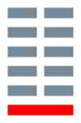春回大地 |
17 泽雷随 随从机动 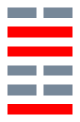由强变弱 |
| 巽 风 |
44 天风姤 结婚不宜 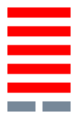不期而遇 |
48 水风井 往来井井 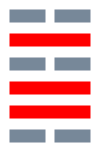无丧无得 |
18 山风蛊 危机潜伏 内部不安 |
32 雷风恒 平淡不变 保持常态 |
57 巽为风 往来不定 随风漂浮 |
50 火风鼎 大亨养贤 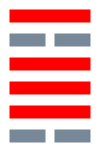鼎力合作 |
46 地风升 柔以时升 种子发芽 |
28 泽风大过 本未衰弱 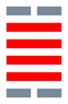负担过重 |
| 离 火 |
13 天火同人 与人交往 同心同力 |
63 水火既济 和谐顺心 功成名就 |
22 山火贲 好景不常 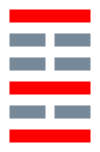绚丽晚霞 |
55 雷火丰 运势转衰 成果丰硕 |
37 风火家人 温暖在内 正家定位 |
30 离为火 炎烈不前 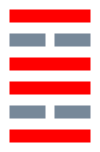光明艳丽 |
36 地火明夷 休养生息 落日余晖 |
49 泽火革 已需转机 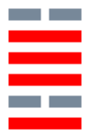新陈代谢 |
| 坤 地 |
12 天地否 运气不佳 闭塞不通 |
8 水地比 亲比竞争 水田丰满 |
23 山地剥 危在旦夕 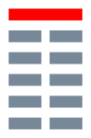外强中空 |
16 雷地豫 从长计议 细心策划 |
20 风地观 检讨反省 
万事难行 |
35 火地晋 充满活力 如日东升 |
2 坤为地 缺积极性 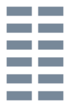柔顺包容 |
45 泽地萃 欣欣向荣 人文荟萃 |
| 兑 泽 |
10 天泽履 不可冒进 跟从别人 |
60 水泽节 适可而止 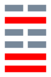循序渐进 |
41 山泽损 奉献存储 损下益上 |
54 雷泽归妹 运势稍待 少女出嫁 |
61 风泽中孚 成功在望 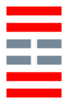忠心诚信 |
38 火泽睽 小事尚吉 
事与愿违 |
19 地泽临 与时推移 随机应变 |
58 兑为泽 丽泽多言 爽朗喜悦 |